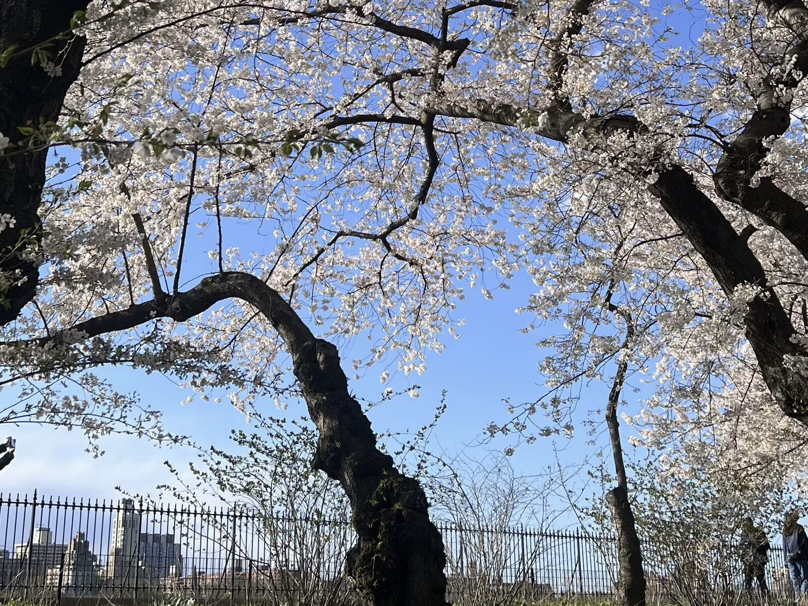
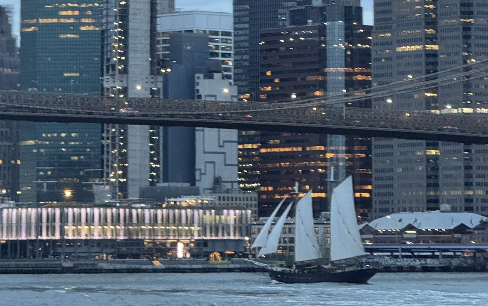

Nature

Animals

People
I think each of our lives is like a movie, just with different plotlines. There may be some excitement and some plainness, but we should cherish them all because one day this movie will come to an end.
At eleven o'clock in the evening, I should also go to bed. I really enjoy the feeling of lying in bed with my fingers out of sight. It's very quiet, and it's so dark that I can't see anything, so I close my eyes and reminisce about the day I spent, just like watching today's movie in the cinema.

Sunset Glow

Riverside

Light